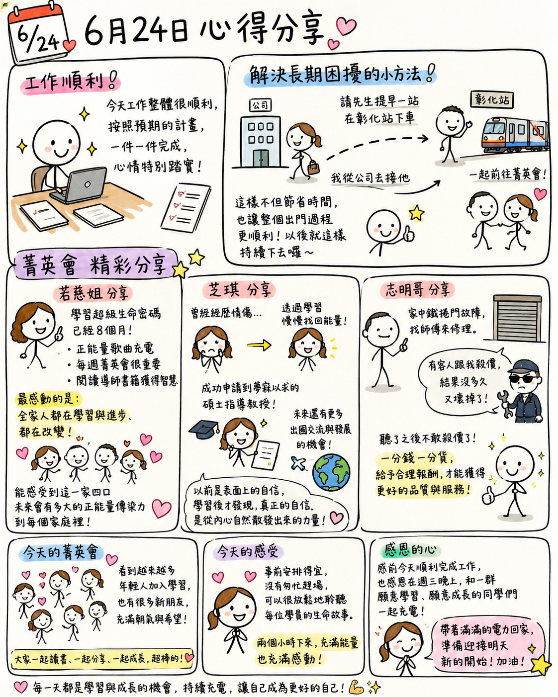

日期：2026/06/24

今天的工作整體來說非常順利，幾乎都有按照自己預期的進度，一件一件把該完成的事情完成，心情也特別踏實。
晚上緊張菁英會前，還意外找到了一個解決長期困擾的小方法。因為平常要配合先生下班搭火車的時間，常常會趕得比較匆忙，甚至容易遲到。今天改成請先生提早一站在彰化站下車，這樣我就能直接從公司過去接他，再一起前往菁英會。沒想到這樣一調整，不但節省了不少時間，也讓整個出門過程變得順利許多。看來以後可以持續採用這個方法，讓每週三的菁英會都能更輕鬆地參與。
今天的菁英會也聽到許多很棒的分享。
若慈姐分享自己進入超級生命密碼學習八個月來的改變。她提到，除了有許多正能量歌曲能為生活充電之外，每週固定參加菁英會、閱讀導師書籍，更是讓自己持續成長的重要關鍵。最讓她感動的是，全家人都在學習與進步、都在改變。聽著她的分享，能確切的感受到這一家四口未來會有多大的正能量傳染力到每個家庭裡。
芝琪則分享自己走出情傷的心路歷程。從失戀時的低潮，到現在順利申請到夢寐以求的碩士指導教授，甚至看見未來更多出國交流與發展的機會，整個人散發著滿滿的希望與自信。她提到，以前的自己比較像是表面上的自信，學習之後才發現，真正的自信是從內心自然散發出來的力量。這段分享也讓我很有共鳴。
志明哥則用修理鐵捲門的小故事，分享「一分錢一分貨」的道理。有時候尊重專業、給予合理的報酬，反而能得到更好的品質與服務，這也是生活中很實際的一種智慧。
整場菁英會下來，我最開心的是看到越來越多年輕人加入學習，也有許多新朋友陸續參與。大家一起讀書、一起分享、一起成長，讓整個菁英會充滿朝氣與希望。
今天因為事前安排得宜，沒有匆忙趕場，能夠很放鬆地坐在後面細細聆聽每位學員的生命故事。兩個小時下來，不只充滿了能量，也充滿了感動。
感恩今天順利完成工作，也感恩能夠在週三晚上，和一群願意學習、願意成長的同學們一起充電。帶著滿滿的電力回家，準備迎接明天新的開始。